23赛季 | 英雄组专访
英雄组专访
立即阅读
兵种介绍
英雄是战队的女儿，42mm“小”弹丸发射者。
具有伤害高，攻速慢，移动慢，血量低的特点，主打一个一发致命。
如果把RoboMaster比赛当作战场的话，步兵是拿着冲锋枪穿着防弹衣去跟敌方短兵相接的战士，那么英雄就是在后方瞄准敌方基地的狙击手，是团队中的主要输出力量，对比赛的胜负起着决定性的作用！
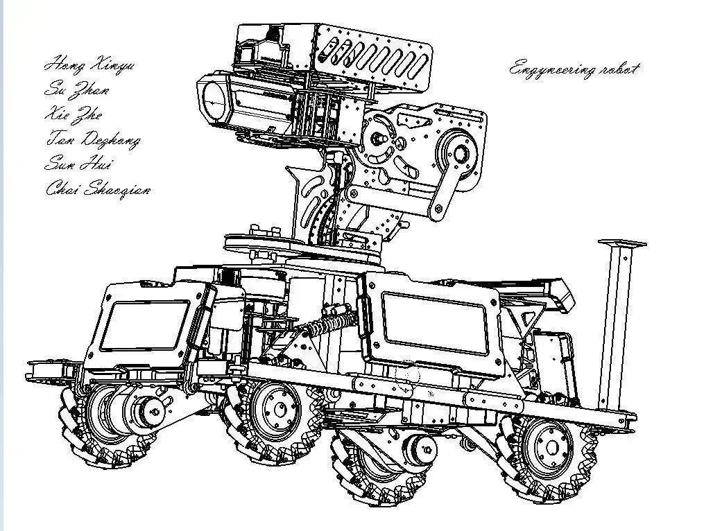
成员介绍
苏展
21级机械组成员，负责英雄机械
性别男，爱好美女，喜欢跑步（搞了rm没啥心思跑了）。主要负责英雄拨弹，链路，发射以及主体部分。

1

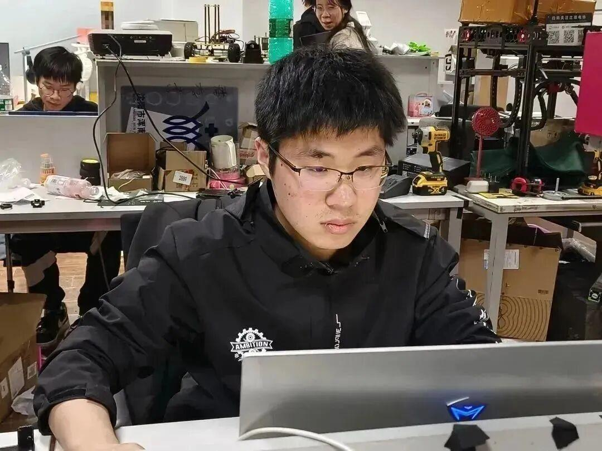
谢喆
21级机械组成员，负责英雄底盘
我是机械悖论，机械图纸总是与成品有亿点点小差别，22年加入战队成为机械组的一员，23赛季负责英雄底盘绘制与制作。
2

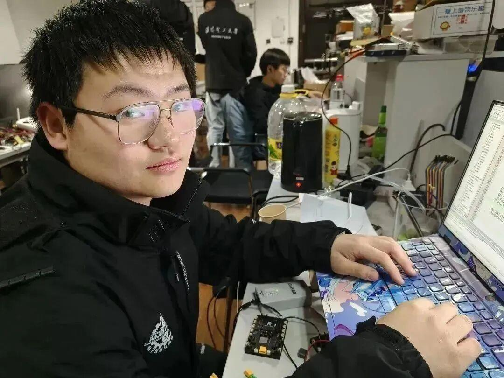
洪鑫宇
21级电控组成员，负责英雄电控
我认为完美无缺的电控代码放在新英雄上会有疯车的概率。

3

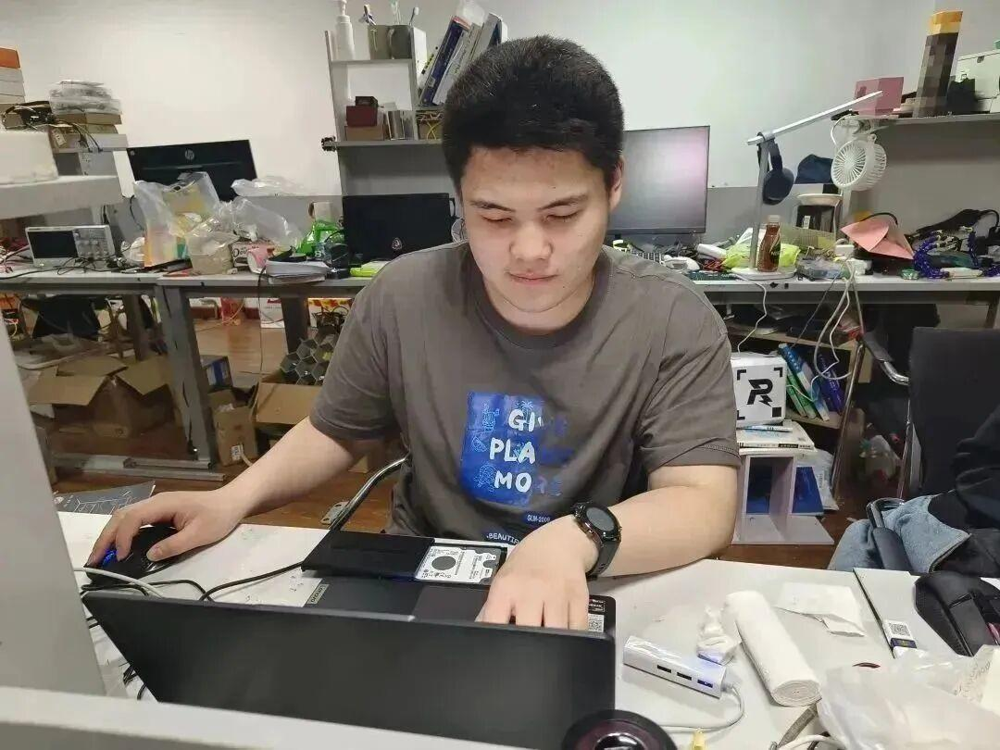
柴少乾
21级算法组成员，负责英雄自瞄吊射
爱好打篮球（已经一个多月没打过球了）。我觉得完美无缺的视觉代码放在新英雄上会很好，出错了都是电控的责任。

4

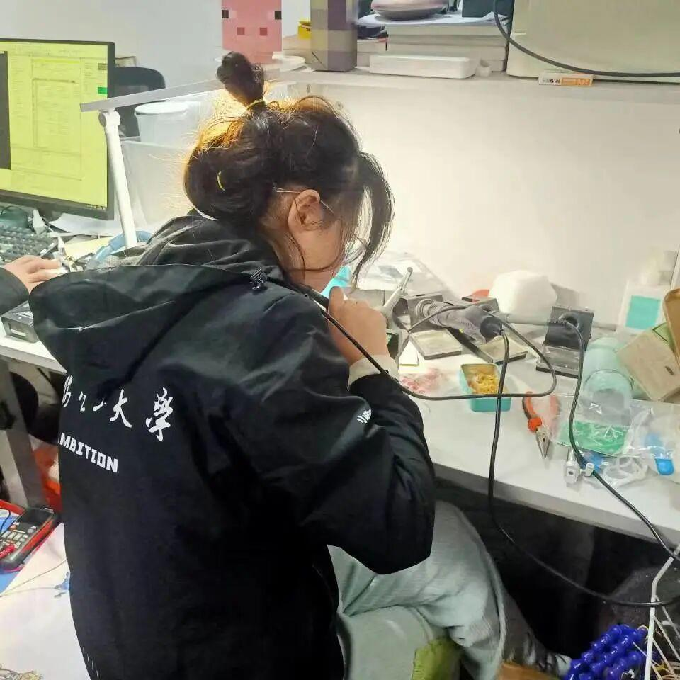
孙慧
20级硬件组成员，负责超级电容模块的制作与改善，功率控制
我是硬件小白菜，硬件小白又很菜，21年加入战队，RoboMaster23赛季担任项管加硬件组组长，编外宣运组。

5
英雄趣事
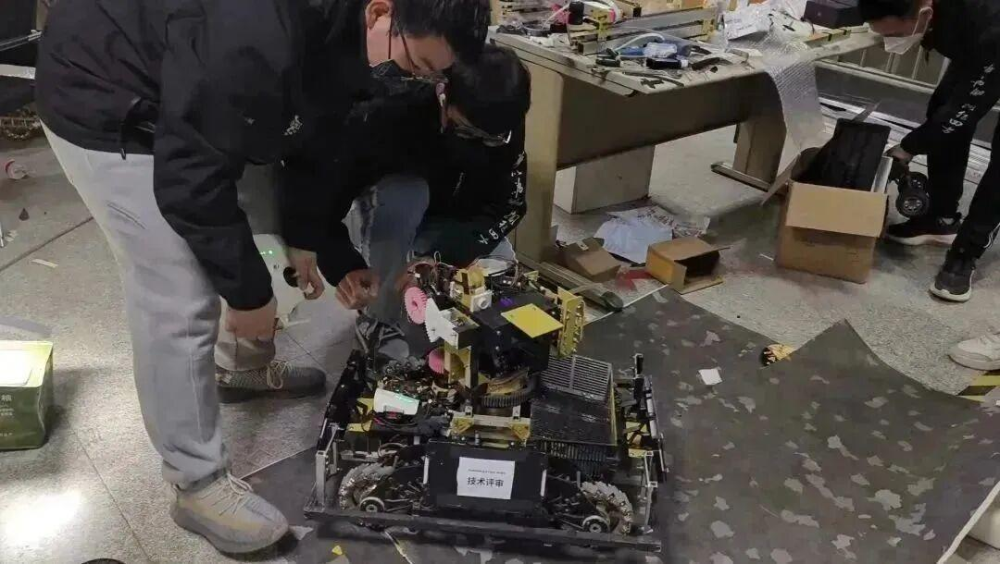
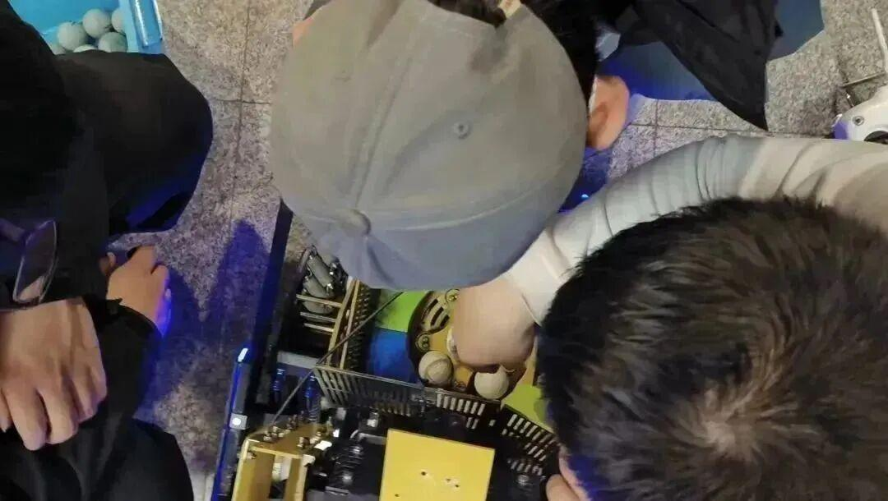
苏展：我和鑫宇从晚上九点干到凌晨俩点，只为拍英雄中期吊射视频，然后他发现摩擦轮只有一颗螺丝，被坑死。
洪鑫宇：有一天我在看英雄图纸，发现图纸干涉了，在众多机械组成员的围观下，只有身为电控组成员的我看出了机械问题。

小编:在拍摄中期视频的时候，英雄的自瞄失控了，某个电控组成员和某个算法组成员心脏骤停。

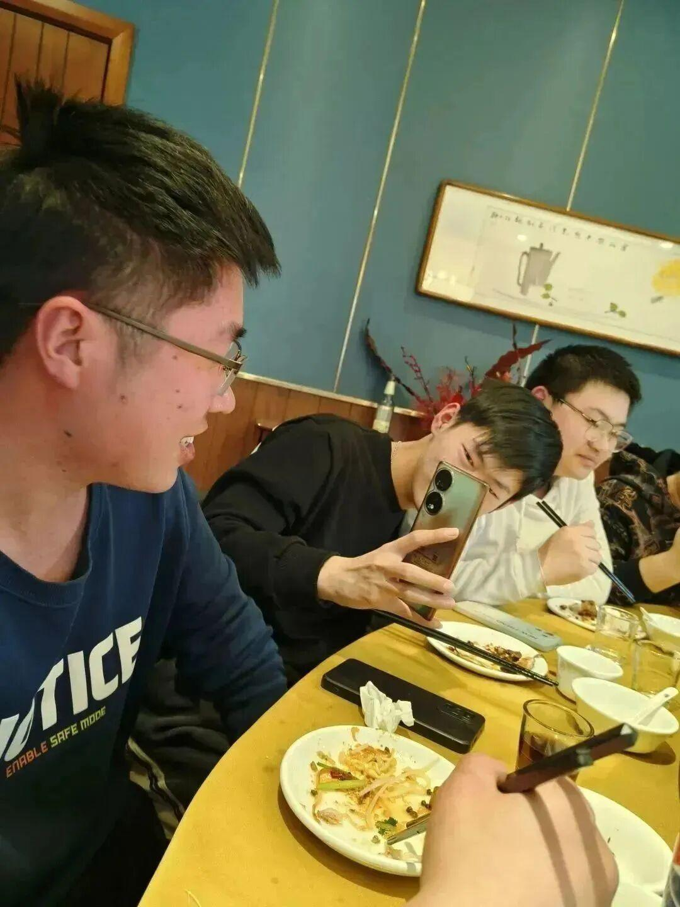
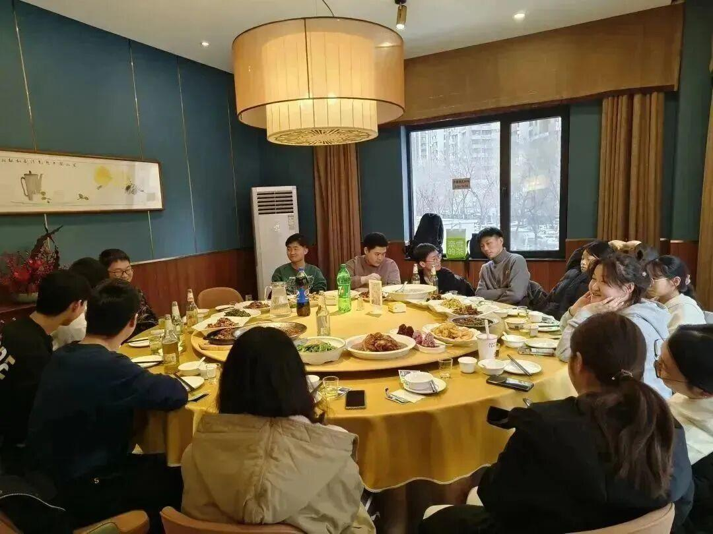
苏展：这是之前刘老师请客那回，喆哥喝酒喝的脸通红。
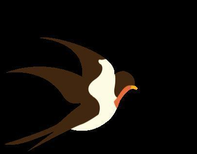
英雄组相爱相杀
孙慧：我和众哥的爱恨情仇，三年了，钢铁般的友谊。
孙慧：谭德众说：“慧姐！画3个板子和3个主控芯片！！f0，f1 ，f4，你重新画吧！！！我都大三了，我还在这儿调了一天的can，你把f0重新画吧！”
孙慧：我俩得甲流了，只有我俩在二楼呆了好几天。
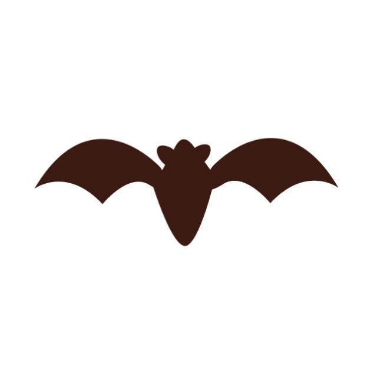
文字|红鲤
排版|红鲤